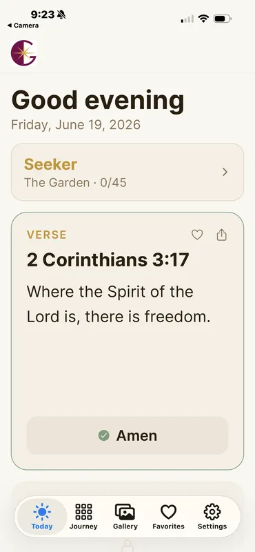
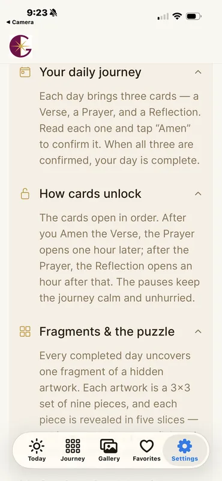
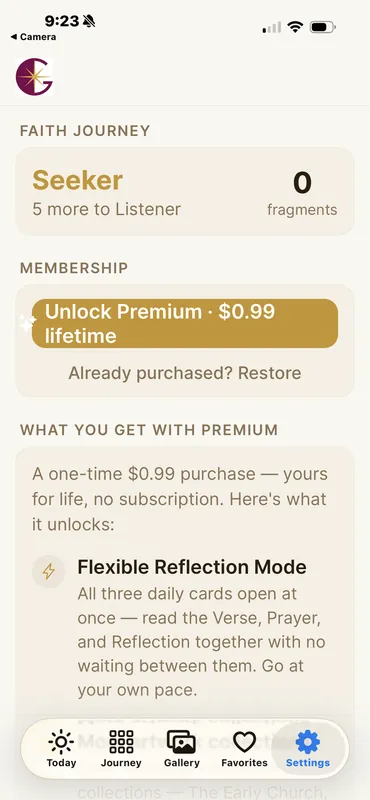
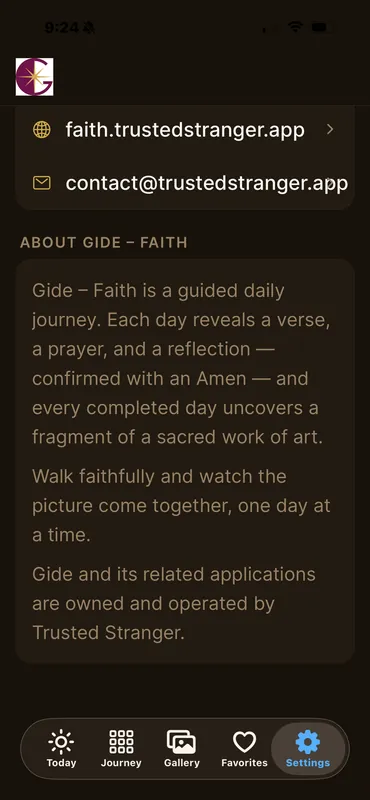

Daily Scripture
Find Bible verses selected to encourage, strengthen, and guide you.
Daily scripture, meaningful prayer, quiet reflection, and encouragement rooted in faith.
Features
Find Bible verses selected to encourage, strengthen, and guide you.
Access prayers for everyday situations, reflection, and support.
Receive reminders designed to bring peace, hope, and daily focus.
Inside the app




Good to know
Yes. Gide – Faith is available on the App Store and ready to help you discover daily scripture, prayer, and encouragement.
No. Gide – Faith is designed to be simple and accessible without requiring a user account.
Gide – Faith includes daily scripture, prayer, reflection, favorites, progress features, and faith-based encouragement.
Email us at support@gidehub.com .
Download Gide – Faith for daily scripture, prayer, reflection, and peaceful reminders.